User guide
Keep your records in TiffinDB
This guide tells you how to find, add, and change records. It also tells you how to link records, attach files, and keep your data safe. It is for the people who use TiffinDB every day. You do not need technical knowledge.
Note
The text in a box, for example Save, is the text that you see on the screen. Some tasks are for Admins only. These tasks have the mark Admin. All the screenshots show the example project Home Inventory. All names and values in it are invented.
Part 1About TiffinDB and the words it uses
TiffinDB is a program for small personal databases. Examples are a home inventory, a recipe collection, or a list of books. TiffinDB runs on a web server. You use it in a web browser on a computer, a tablet, or a phone.
One person installs TiffinDB and manages it. The screens call this person the person who looks after this TiffinDB. This guide calls this person "the Admin who manages TiffinDB".
The words
TiffinDB uses a small set of words. This guide uses each word with one meaning only.
- Project
- One database, for example Home Inventory. A project holds tables, forms, and files.
- Table
- One kind of thing in a project, for example Items, Rooms, or Warranties.
- Record
- One thing in a table, for example the item "Stand mixer". Each table has its own word for one record, for example "item" or "room". You see this word on buttons, for example Add item.
- Field
- One piece of information in each record of a table, for example Name, Purchased, or Value. Each field has a type, for example Text, Date, or Currency.
- Title
- The field that gives each record its name in lists and links. In Items, the title is the Name field.
- Link
- A connection between two records, for example between the item "Stand mixer" and the room "Kitchen".
- Collection
- A saved search on one table. It updates by itself when records change.
- Trash
- The place for the records that you move to the trash. You can restore a record from the trash.
- Snapshot
- A copy of the project that TiffinDB saves before a large change.
Admin and Member
Each person has one of two roles. An Admin can do all tasks. A Member can use only the projects that an Admin shares with them.
| Task | Admin | Member |
|---|---|---|
| See projects | All projects | Only the projects that an Admin shares with them |
| Look at, add, and change records, links, and files | Yes | Yes |
| Move records to the trash, and restore them | Yes | Yes |
| Empty the trash | Yes | No |
| Make, change, and delete collections | Yes | Yes |
| Search a project, change the display settings, change their own password | Yes | Yes |
| Import and export | Yes | No |
| Make projects, change tables and fields, share projects | Yes | No |
| Add people, set temporary passwords, turn plugins on and off | Yes | No |
When a Member opens a page that only an Admin can use, TiffinDB shows You cannot do that here. When a Member opens a project that is not shared with them, TiffinDB shows Page not found.
Part 2Sign in, sign out, and change your password
Sign in
The Admin who manages TiffinDB gives you the web address, your username, and a temporary password.
Open the web address of your TiffinDB in a web browser.
The Sign in page opens.
Type your username in Username.
Type your password in Password.
To see the password as you type it, tick Show password.
Select Sign in.
You can also push Enter.
The page Your projects opens. If this is your first sign-in, the page Change your password opens. Do the procedure in First sign-in.
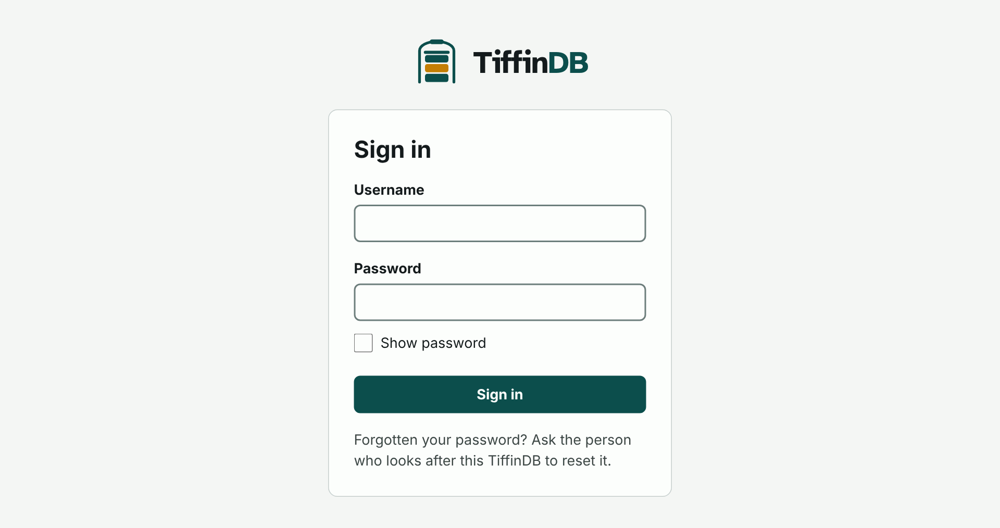
If the username or the password is not correct, TiffinDB shows That username and password do not match. Check them and try again. After many incorrect tries, TiffinDB shows Too many tries. Wait 30 seconds, then try again. The time in the message can be different. Wait for that time. Then try again.
First sign-in: choose your own password
The first time that you sign in, TiffinDB asks for a new password. This also occurs after an Admin sets a temporary password for you. You cannot open other pages until you change the password.
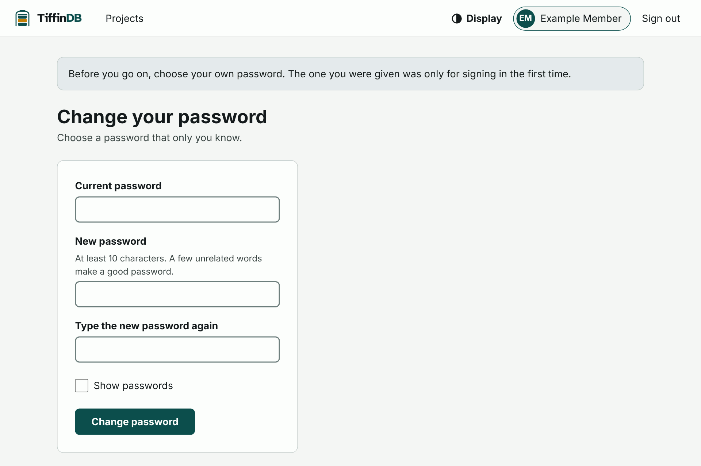
Type the temporary password in Current password.
Type a new password in New password.
Use at least 10 characters. Do not use your username. Some unrelated words together make a good password.
Type the new password again in Type the new password again.
Select Change password.
The page Your projects opens with the message Your password has been changed.
Note
If the two new passwords are different, TiffinDB shows only that problem. It does not show other problems at the same time, for example a password that is too short. Correct the problem. Then select Change password again. Do this again for each problem.
Change your password at a different time
Select your name in the top bar, for example Example Member.
The page Change your password opens.
Do steps 1 to 4 of the procedure above. Type your current password in step 1.
To stop without a change, select Cancel.
Sign out
Select Sign out at the right end of the top bar.
The Sign in page opens with the message You have signed out.
Warning
Always sign out on a computer that other people also use. If you do not sign out, the next person can see and change your records.
Part 3A tour of the screen
This is the list of a table, as an Admin sees it. The numbers show the parts of the screen. The list below the figure tells you what each part does.
![The Items list of Home Inventory with eleven numbered marks: 1 the links Projects, People, Plugins; 2 the search box Search Home Inventory; 3 the Display link; 4 the name Example Admin; 5 the Tables group in the sidebar; 6 the Collections group; 7 the Data group with Import a file and Export; 8 the links Tables and fields and In the trash; 9 the Add item button; 10 the box with Find in Items, Sort by, Apply, and Filter; 11 the table of records with the columns Name, Room, Category, Purchased, Value, Condition, and Quantity.](img/user-tour.png)
- Projects opens the list of your projects. Admins also see People and Plugins. The TiffinDB logo also opens the list of your projects.
- The search box looks in all the tables of the project. Refer to Search all tables.
- Display opens the page Reading and display. Refer to Part 13.
- Your name opens the page Change your password. Sign out is to the right of your name.
- Tables: the tables of the project, with the number of records in each table. Select a table to see its list.
- Collections: your saved collections, with the number of records that match. New collection makes a new collection.
- Data: Import a file and Export. Only Admins see this group.
- Tables and fields shows the tables of the project. In the trash opens the trash, with the number of records in it.
- Add item adds a new record to the table. The word "item" changes with the table.
- The controls for search, sort, and filter in this table. Refer to Part 5.
- The records. The first column is the title of each record. Select a title to open the record.
At the bottom of each page is the line TiffinDB, free software under AGPL-3.0-or-later and the link Source code.
Messages
After a change, TiffinDB shows a message in a box at the top of the page, for example Your changes have been saved. If there is a problem, TiffinDB shows a box with the title There is a problem or There are 2 problems. Each problem in the box is a link. Select the link to go to the field with the problem. The same text also shows below the field.
On a phone
TiffinDB also works on a phone. On a narrow screen, the top bar uses more than one line. The project sidebar is above the list of records. Scroll down to see the records. A wide table of records scrolls to the side in its own box.
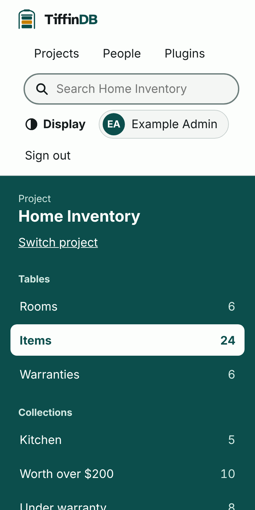
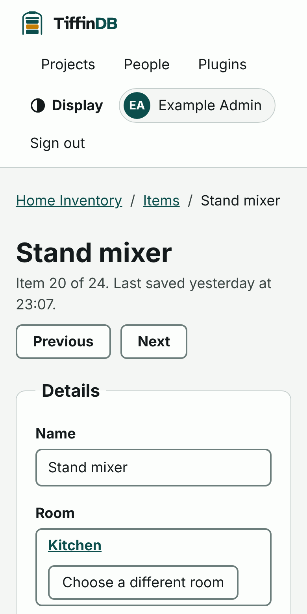
Part 4Projects
After you sign in, the page Your projects opens. It shows one card for each project that you can use. Each card shows the tables, the number of records, and the last change. The number of records does not include records in the trash.
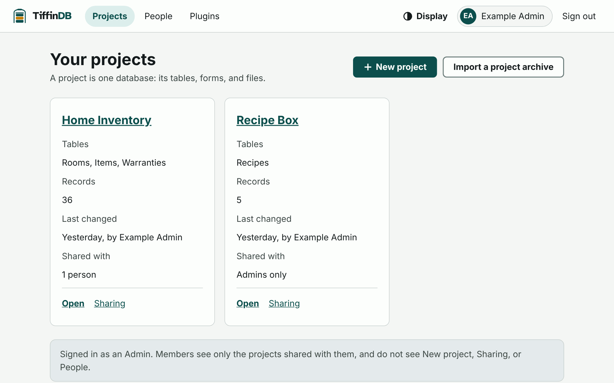
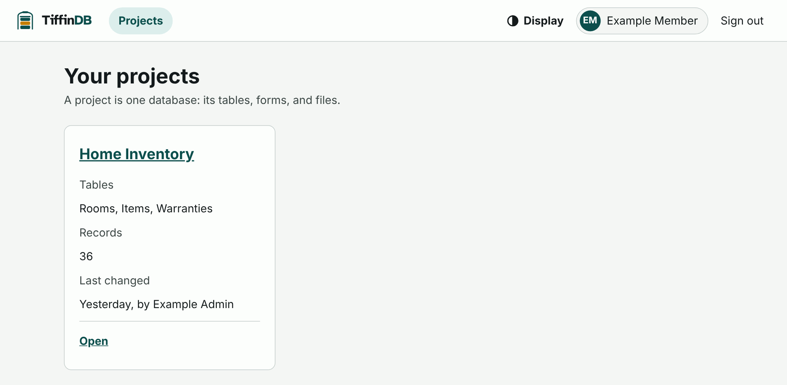
Open a project
On the page Your projects, select the name of the project or Open.
The list of the first table of the project opens. If the project has no tables, the tables page of the project opens.
To go to a different project, select Switch project in the sidebar. You can also select Projects in the top bar.
If you see No projects have been shared with you yet., ask an Admin to share a project with you.
The tables page
The link Tables and fields in the sidebar opens a page with the tables of the project. It shows the number of fields and records in each table. For a Member, this page only gives information. The table names are not links. The page has no sidebar. To return to the records, select Projects in the top bar. Then select Open. An Admin can change the tables and fields on this page (refer to Tables and fields).
Part 5Look at records: list, sort, search, and filter
Select a table in the sidebar to see its list. The line below the table name tells you the number of records and the sort order, for example 24 records, sorted by Name, A to Z. The list shows 50 records on each page. Use Previous and Next below the list to see more.
The list shows the title and up to six more fields. Long text fields do not show in the list. A link field shows the titles of the linked records. A file field shows the number of files, or None.
Sort and search in one table
To search, type a word or part of a word in Find in Items.
TiffinDB looks for the text in all the fields of each record.
To sort, select an order in Sort by, for example Value, highest first.
Select Apply.
You can also push Enter in the search box.
The list shows only the records that match. The line below the table name tells you how many match, for example 2 records match out of 24.
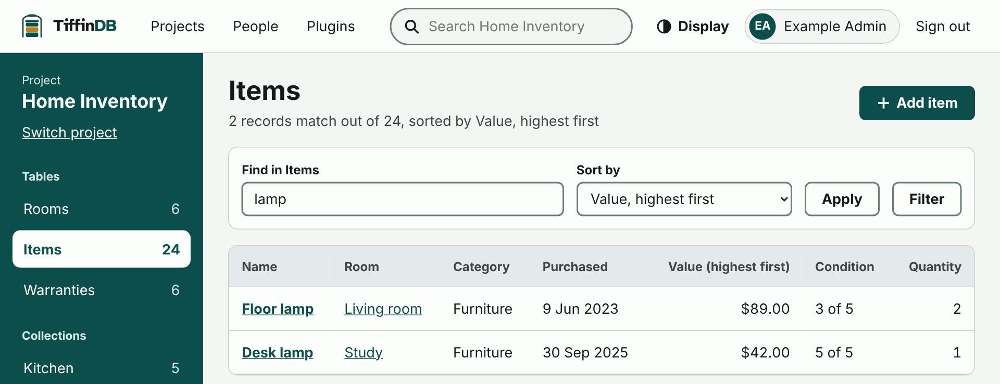
Each type of field has its own sort words. For example, text sorts A to Z, numbers sort lowest first, and dates sort oldest first. At the end of the list are Newest added first, Oldest added first, and Recently changed first.
To see all records again, clear the search box. Then select Apply.
Filter
A filter shows only the records that agree with one condition. A filter works on fields of these types: Choice, Checkbox, Link to another table, Date, and Date and time.
Select Filter above the list.
The page Filter Items opens.
Select a field in Field, for example Category (Choice).
Select Next.
Select the condition, for example is.
Select the value, for example Appliance.
To use a different field, select Choose another field.
Select Show matching records.
The list shows only the records that match, with the message Showing only records where Category is Appliance.
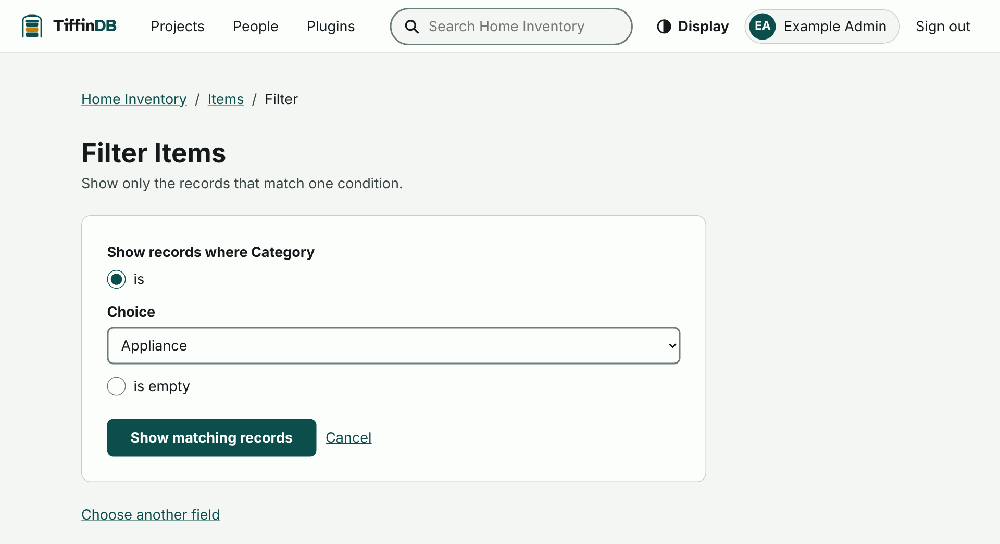
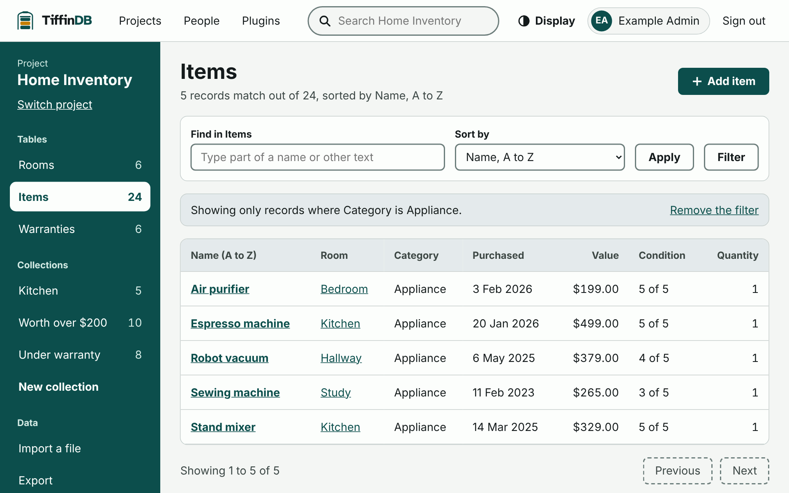
You can use one filter at a time. To use more than one condition, make a collection (refer to Part 9). If the filter has a problem, TiffinDB shows all records and the message The filter could not be used, so every record is shown. with the reason.
Search all tables of a project
Type a word in the search box in the top bar, for example
garage.The search box shows on the list pages of tables and collections.
Push Enter.
The page Search results opens. The results are in groups, one group for each table.
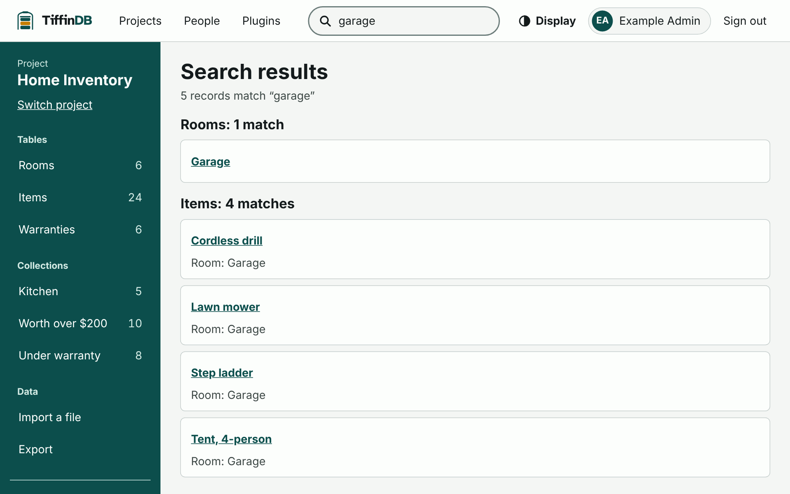
Below each result, TiffinDB shows the field that matches. This is the first field that matches. It is not always the title. For example, a search for "drill" shows the Manual field of the item "Cordless drill".
Part 6Add and change a record
Select the title of a record in a list to open it. The record page is also the form that you use to change it. There is no separate "edit" mode.
![The Stand mixer record with eight numbered marks: 1 the breadcrumb Home Inventory / Items / Stand mixer; 2 the Previous and Next buttons; 3 the Details group with the fields Name, Room, Category, Purchased, Value, Condition, Quantity, Serial number, Under warranty, Manual, Notes, and Item number; 4 the Room link Kitchen with the button Choose a different room; 5 the Files group with a receipt file and a photo; 6 the Warranties group with one linked warranty; 7 the Save and Back to list buttons; 8 the Move to trash button. The last line says Added today by Example Admin.](img/user-record.png)
- The breadcrumb. Select the name of the project or the table to open it.
- Previous and Next open the record before or after this one, in the order of the list that you came from.
- Details: the usual fields of the record.
- A link to one record (here, the room). Refer to Part 7.
- Files: the attached files and pictures. Refer to Part 8.
- A link to more than one record (here, the warranties). Each field of this kind has its own group.
- Save saves your changes. Back to list opens the list again.
- Move to trash. Refer to Part 10.
Change a record
Open the record.
Change the values in the fields.
Select Save.
The message Your changes have been saved. shows. The record stays open.
Caution
The buttons for links and files open a different page. Below these buttons is the text Save your changes first: the buttons here leave this page. Select Save before you use them. If you do not, you lose the changes that you typed.
Add a record
Open the list of the table.
Select Add item. The word changes with the table, for example Add room.
The page New item opens.
Type the values that you know. You can add more later.
Select Save.
The new record opens with the message The item has been added.
On a new record, you cannot add links or files yet. TiffinDB shows, for example, You can choose one once this record is saved. Save the record first. Then add the links and files. An Auto-number field shows Given when you save.
When a value is not correct
If a value does not agree with its field, TiffinDB does not save the record. It shows the problems at the top of the page and below each field.
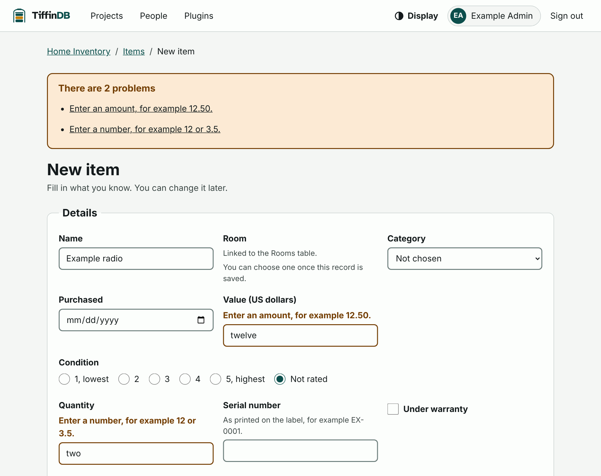
A field with (required) after its name must have a value. If it is empty, TiffinDB shows Fill this in.
When another person changed the same record
Two people can open the same record at the same time. If the other person saves first, TiffinDB does not save your changes. It shows the page This item was changed while you were editing it. A table shows the fields that are different: Saved version and Your version.
- To keep the other person's change, select Keep the saved version.
- To save your values, select Save my version anyway.
If the other person changed different fields, TiffinDB tells you The other change was to fields you did not change here, so saving keeps both.
The 17 field types
An Admin selects the type of each field. The type controls what you can type in the field and how TiffinDB shows it.
| Type | What it holds | How you give a value | How it shows |
|---|---|---|---|
| Text | A short text on one line, for example a name | Type it | As you typed it |
| Long text | Several lines of text, for example notes | Type it in a large box | On the record only, not in lists |
| Number | A number, for example a quantity | Type it, for example 12 or 3.5 | 12, 3.5 |
| Currency | An amount of money | Type it, for example 12.50. The field name tells you the currency. | $329.00 |
| Rating | A score from 1 to 5, or to a different top score | Select a number, or Not rated | 4 of 5 |
| Auto-number | A number that TiffinDB gives each new record | You cannot type it | 27 |
| Date | A day | Use the date picker of your browser | 14 Mar 2025 |
| Time | A time of day | Use the time picker of your browser | 14:30 |
| Date and time | A day and a time, for example an appointment | Use the date and time picker of your browser | The date, then the time |
| Duration | A length of time | Type hours and minutes, for example 1:30. A single number is minutes: 90 becomes 1:30. | 1:15 |
| Checkbox | Yes or no | Tick the box, or leave it empty | Yes or No |
| Choice | One option from a list | Select it from a list. Not chosen means empty. | The option |
| Email address | An email address | Type it, for example name@example.com | As you typed it |
| Phone number | A phone number | Type digits, spaces, and + ( ) - . | As you typed it |
| Web address | A link to a web page | Type it with https:// or http:// at the start | As you typed it |
| File or image | Files, for example photos, receipts, or manuals | On a separate page. Refer to Part 8. | The file name; a picture shows small |
| Link to another table | Links to records in a table | On a separate page. Refer to Part 7. | The titles of the linked records |
Each type has its own problem messages, for example Enter a date as year, month, day, for example 2026-03-14. The message tells you what to type.
Part 7Links between records
A link connects a record to a record in a different table, or in the same table. In Home Inventory, each item links to one room, and an item can link to warranties. A link shows on the two records. When you link an item to the room Kitchen, the Kitchen record also shows the item.
Link to one record
A field that links to one record (for example Room) shows the linked title. Below it is the button Choose a record, or Choose a different room when a room is already chosen.
Save the record if you changed it.
Select Choose a different room.
The page Room for Stand mixer opens.
To find a record, type part of its title in Find in Rooms.
Select Find.
Select Choose next to the record.
The message Garage is now chosen. shows. The new record replaces the old one.
Select Back to Stand mixer.
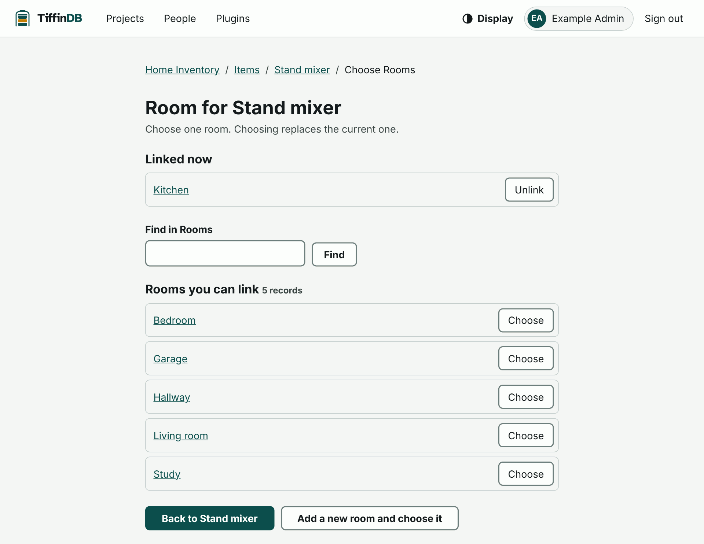
Link to several records
Save the record if you changed it.
Select Link a record. If there are links already, the button is Link another warranty.
Select Link next to each record that you want.
The message, for example Stand mixer, manufacturer warranty is now linked., shows. The record moves to Linked now.
Some links allow only one record on the other side. For example, each warranty links to one item only. A warranty that is linked to a different item shows, for example, Linked to Cordless drill. It has no Link button. In the example data, each warranty is linked to an item already. Thus the page shows no Link buttons. To move a warranty to a different item, first unlink it from its item.
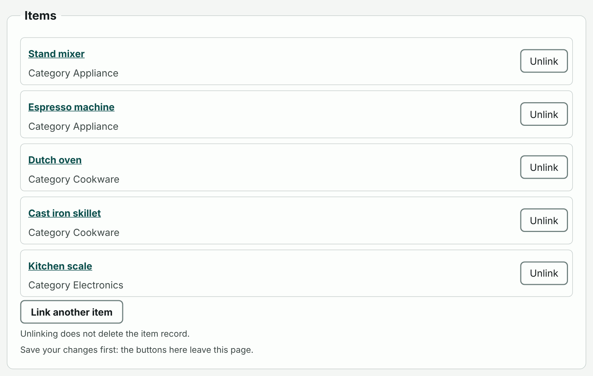
If the record that you need does not exist yet, select Add a new room and choose it at the bottom of the page. For a link to several records, the button is Add a new warranty and link it. Type the values of the new record. Then select Save.
TiffinDB adds the record and links it. The page Room for Stand mixer opens again with a message, for example Example attic has been added and linked.
When you search on this page and then choose a record, the chosen record is not in the list of results. The page can then show, for example, Nothing in Rooms matches "kit". This is correct: the record is now below Linked now.
Unlink a record
Select Unlink next to the linked record.
The message, for example Kitchen is no longer linked., shows immediately.
Unlink only removes the link. It does not delete the other record.
A link to a record in the trash stays. When you restore the record, the link shows again. If the room of an item is in the trash, you cannot choose a different room. Restore the room. Then unlink it. As an alternative, ask an Admin to empty the trash.
Part 8Attached files
A File or image field holds files, for example photos, receipts, or manuals. The files are in the Files group of the record. TiffinDB shows pictures in PNG, JPEG, GIF, or WebP format on the record. It keeps other files for download. A field holds at most 100 files for each record.
Add a file
Save the record if you changed it.
In the Files group, select Add a file below the field. For a field that holds only pictures, the button is Add an image.
The page Add a file to Espresso machine opens.
Select the file on your device in File.
Select Add the file.
The record opens with the message, for example receipt.pdf has been added.
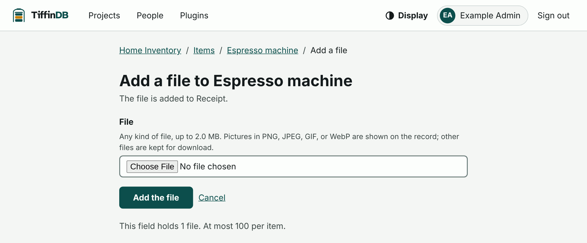
If the file is too large, TiffinDB shows That file is too large and the largest size. Make the file smaller. Or ask the Admin who manages TiffinDB.
Open or download a file
Select Open next to the file.
The page of the file opens. It shows a picture large. It also shows the kind, the size, and the date of the file.
To save a copy on your device, select Download.
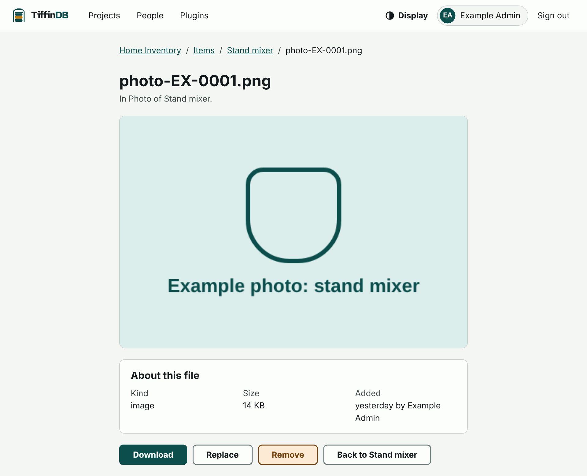
Replace a file
Save the record if you changed it.
Select Replace next to the file.
The page Replace receipt-EX-0001.txt opens.
Select the new file in File.
Select Replace the file.
TiffinDB deletes the old file and keeps the new file. The record opens with a message, for example receipt-EX-0002.pdf has replaced receipt-EX-0001.txt.
Remove a file
Select Remove next to the file.
The page Remove receipt-EX-0001.txt? opens.
Select Remove the file.
TiffinDB deletes the file. The message, for example receipt-EX-0001.txt has been removed., shows.
Caution
When you remove or replace a file, TiffinDB deletes the old file. You cannot restore it from the trash. If you possibly need the file again, download a copy first.
Part 9Saved collections
A collection is a saved search on one table. It has one or more rules. It updates by itself when records change. Collections show in the sidebar below Collections, with the number of records that match. Admins and Members can make collections. All the people who can use the project see the same collections.
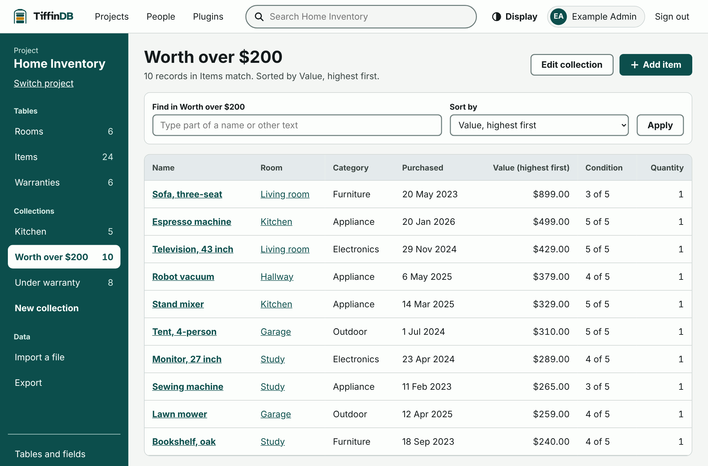
Make a collection
Open the list of the table.
Select New collection in the sidebar.
The page New collection opens.
Type a name in Collection name.
Below Show items that match, select All of these rules or Any of these rules.
In Rule 1, select a field.
Select Preview.
The tests for that field show, for example is ticked or is after.
Select a test.
If the test needs a value, type or select the value.
To add a rule, select Add a rule. Then do steps 5 to 8 again for the new rule.
If necessary, select an order in Sort by.
Select Preview to see the first 5 records that match.
Select Save collection.
The collection opens with the message The collection has been saved. It shows in the sidebar.
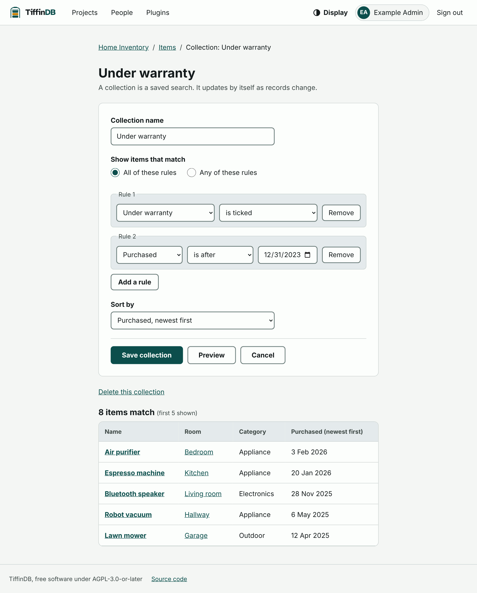
Note
- When you push Enter on this page, TiffinDB does Preview. It does not save.
- An empty rule stops the save with the message Choose a field for this rule. Select Remove next to the empty rule.
- A collection with no rules shows all the records of the table.
Change or delete a collection
- To change a collection, open it. Select Edit collection. Make the changes. Then select Save collection.
- To delete a collection, open it. Select Edit collection. Select Delete this collection. Then select Delete the collection. TiffinDB deletes only the saved search. The records do not change.
If an Admin deletes or changes a field that a rule uses, the rule stops working. The collection then shows, for example, 1 rule of this collection no longer works and is ignored. Open Edit collection. The page tells you why the rule does not work. Correct the rule. If you cannot correct it, select Remove next to the rule.
Part 10Trash and restore
TiffinDB does not delete a record immediately. It moves the record to the trash. A record in the trash does not show in lists, in search, or in collections. Its links and files stay. When you restore the record, TiffinDB also restores its links and files.
Move a record to the trash
Open the record.
Select Move to trash.
The list of the table opens with the message, for example Floor lamp has been moved to the trash., and the button Undo.
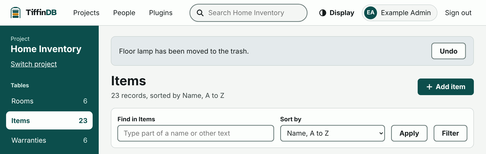
Restore a record
Select In the trash at the bottom of the sidebar.
The page Trash opens. It shows the records in groups, one group for each table.
Select Restore next to the record.
The message, for example Toaster has been restored., shows. The record is in its table again.
To restore all the records of one table, select Restore all in Items.
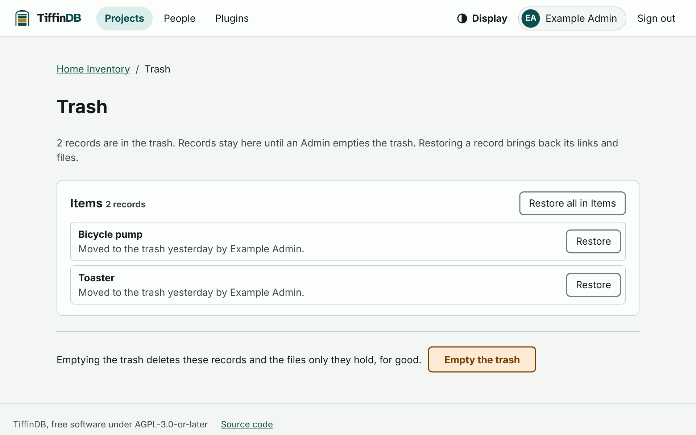
Empty the trash Admin
On the page Trash, select Empty the trash.
The page Empty the trash? opens. It tells you how many records TiffinDB will delete. If these records hold files that no other record holds, it also tells you how many files TiffinDB will delete.
Read the numbers.
To stop, select Cancel.
Select Empty the trash.
The message, for example The trash has been emptied: 2 records and 0 files deleted., shows.
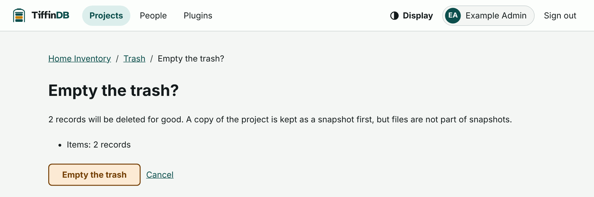
Caution
You cannot restore records after you empty the trash. TiffinDB saves a snapshot of the project first, but the snapshot does not hold files. Only the Admin who manages TiffinDB can restore a project from a snapshot. If the trash changes while you look at the page, TiffinDB shows The trash changed while you were looking. Check the new numbers.
Part 11Import from CSV and XLSX Admin
An Admin can bring rows from a spreadsheet file into a project. TiffinDB reads CSV files (.csv, .tsv, .txt) and Excel workbooks (.xlsx). Each row becomes a record. Each column becomes a field. You can make a new table, or add the rows to a table that exists.
Import a file
Open a table list of the project.
Select Import a file in the sidebar.
The page Import a file opens at Step 1.
Select the file in File.
Below Read the file as, keep Decide from the file name.
If the extension of the file name is not correct, select the format.
Select Continue.
The page Check the fields opens. For a large file, TiffinDB first reads the file in parts.
Below Where should the rows go?, select the table for the rows.
- For a new table, select A new table called. Then type a name in the box.
- For a table that exists, select Add to an existing table. Select the table in the list. Then select Check again.
Check each row of the table Fields. Each row is one column of the file.
- For a new table, the row shows Field name and Type. TiffinDB guessed them from the file. If a name or a type is not correct, change it.
- For a table that exists, the row shows Goes into. TiffinDB matched the columns to the fields by name. If a field is not correct, select a different field. To leave the column out, select Leave out.
- To leave out a column in both cases, clear Bring in.
Read the box with the things to know, if there is one. For example, it tells you about values that TiffinDB cannot read.
Select Import 5 rows. The number is the number of rows in your file.
TiffinDB checks the rows. Then it shows Everything is checked. Choose Save the rows to save them all together.
Select Save the rows.
The import report opens with the message, for example 22 rows were imported into Items.
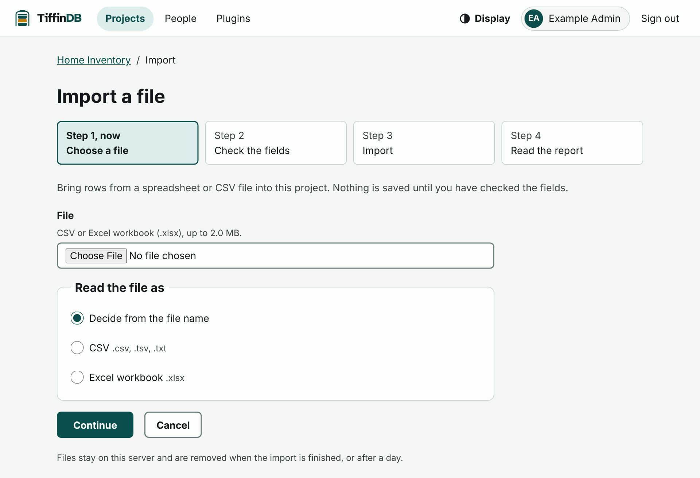
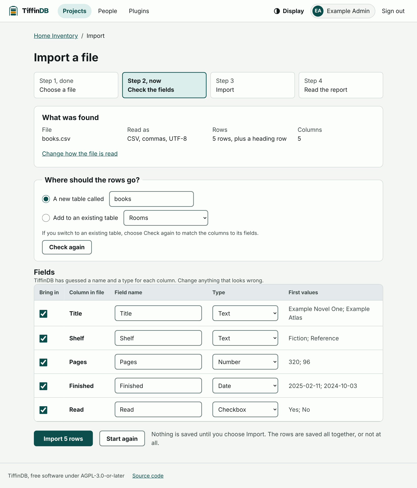
If the columns or the characters look wrong, select Change how the file is read. On that page, select the text encoding. Select the separator. Also tick or clear The first row holds the column names. For a workbook, select the sheet. Then select Read the file again.
Note
When an import makes a new table, TiffinDB uses the table name in lower case as the word for one record. For example, the button can read Add books. To correct it, change One record is called in the table settings (refer to Tables and fields).
The import report
The report tells you the file, the table, and the number of records added. It also tells you the rows left out, the values left empty, and the name of the snapshot that TiffinDB saved first. If TiffinDB left some values empty, a table shows the field and the row numbers. Row 1 is the first row after the heading row.
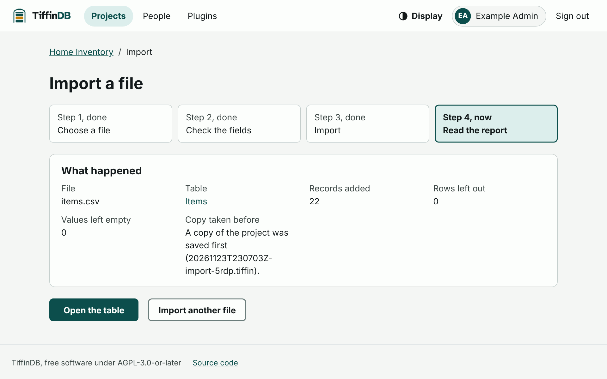
If an import does not finish, TiffinDB shows The import did not finish and Nothing was saved. The project is exactly as it was before. Select Start again.
Part 12Export, and project archives Admin
An export makes a copy of the records in a file. The project does not change. There are two kinds of export:
- A project archive holds the whole project for TiffinDB. It holds every table, record, form, and attached file, and also the records in the trash. Use it as a backup, or to move the project to a different TiffinDB installation.
- A records file holds the records for other programs, in CSV, Excel workbook, or JSON format. It does not hold records in the trash.
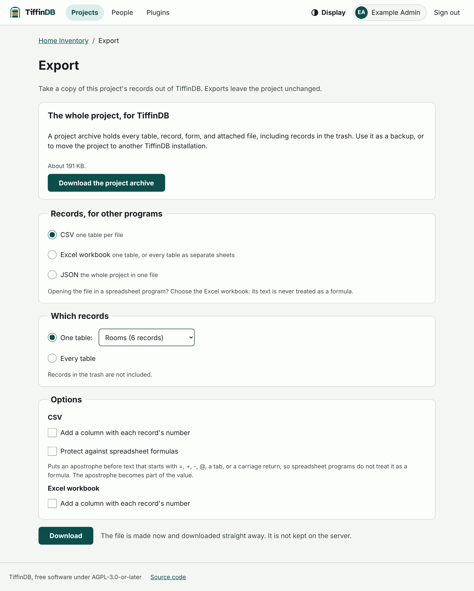
Download a project archive
Open a table list of the project.
Select Export in the sidebar.
Select Download the project archive.
Your browser saves a file with a name such as
home-inventory.tiffindb.zip.
Export records for other programs
On the Export page, select a format below Records, for other programs.
If you will open the file in a spreadsheet program, select Excel workbook.
Below Which records, select One table: or Every table.
If you selected One table:, select the table in the list.
Select the options that you need below Options.
Select Download.
Your browser saves the file, for example
items.csvorhome-inventory.xlsx.
Each format has its own scope, and the format controls the result:
- CSV always gives one table. If you select Every table, you get the table that is selected in the list.
- Excel workbook gives one table, or every table as separate sheets.
- JSON always gives the whole project in one file. If you select One table:, you still get the whole project.
The CSV option Protect against spreadsheet formulas adds an apostrophe before text that starts with =, +, -, @, a tab, or a carriage return. The apostrophe becomes part of the value.
Make a project from an archive
On the page Your projects, select Import a project archive.
Select the
.zipfile in Archive file.If you want a different name, type it in Name for the new project (optional).
Select Import.
The tables page of the new project opens with the message, for example The project Home Inventory has been made from the archive.
Your other projects do not change. TiffinDB does not share the new project with Members. Share it if necessary (refer to Sharing). You cannot upload an archive that is larger than the upload limit of your server. The Admin who manages TiffinDB can restore such an archive manually.
Part 13Reading and display settings
You can change how TiffinDB looks for you. These settings are yours only. They follow you to each device that you sign in on, and they apply to all projects.
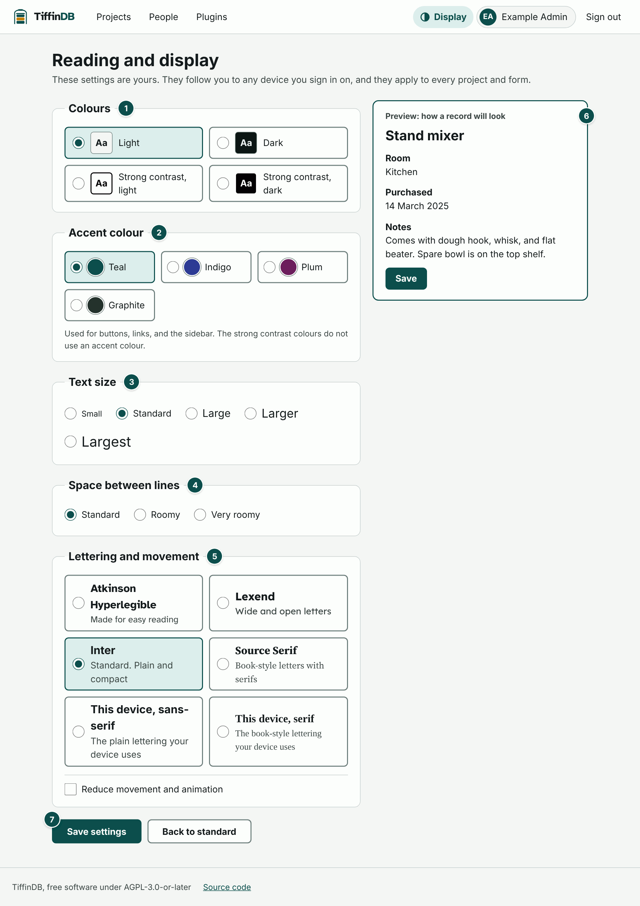
- Colours: Light (standard), Dark, Strong contrast, light, and Strong contrast, dark.
- Accent colour: the colour of buttons, links, and the sidebar. The strong contrast colours do not use an accent colour.
- Text size: five sizes, from Small to Largest.
- Space between lines: Standard, Roomy, or Very roomy.
- Lettering and movement: six typefaces, and Reduce movement and animation. Atkinson Hyperlegible is made for easy reading.
- The preview of a record.
- Save settings keeps your selection.
Change the colours
Select Display in the top bar.
The page Reading and display opens.
Below Colours, select a colour set, for example Dark.
Select Save settings.
The message Your display settings have been saved. shows. All pages use the new colours.
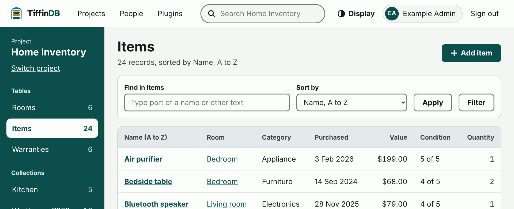
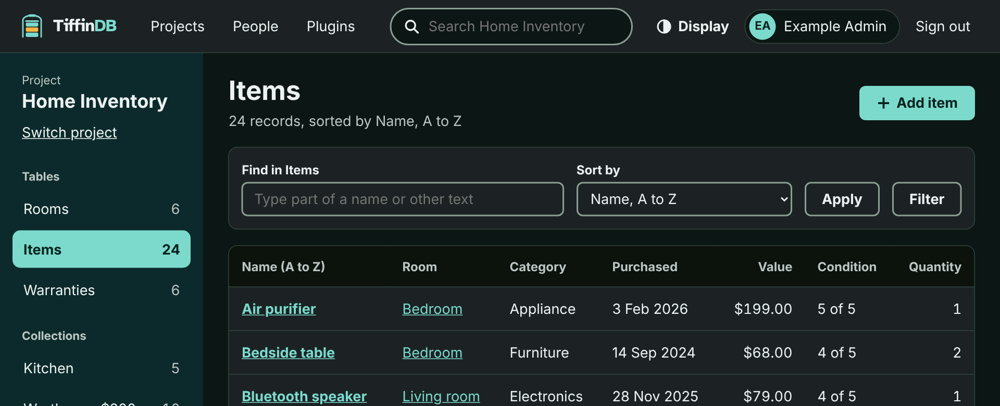
To return to the standard settings, select Back to standard. The message Your display settings are back to standard. shows. The Display link in the top bar only opens this page. There is no other switch for the colours.
Part 14Admin tasks Admin
This part is for Admins. It tells you how to make projects, design tables and fields, add people, share projects, and turn plugins on and off.
Make a project
On the page Your projects, select New project.
Type a name in Project name.
If you want, type the name of the first table in First table (optional). TiffinDB gives it a Name field.
Select Create project.
The tables page of the new project opens with a message, for example Book List has been created. If you typed a first table, the message is, for example, Book List has been created, with the table Books.
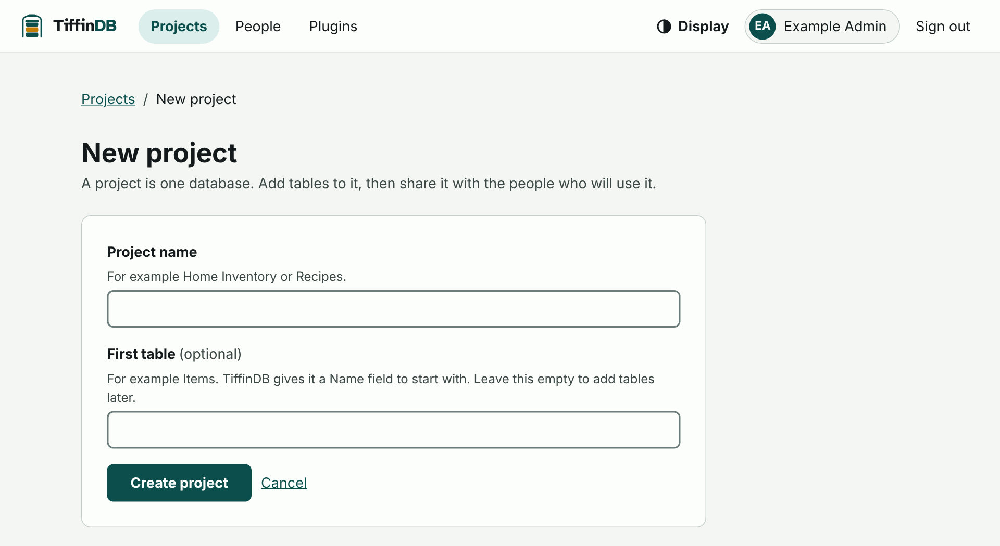
Change the name of a project
Open the tables page of the project.
Select Project settings.
Change Project name.
Select Save.
Tables and fields
Select Tables and fields in the sidebar. The tables page opens. Select the name of a table to see its fields.
![The fields page of the Items table: the line 15 fields. 24 records., the button Add a field, and the table Fields with the columns Field, Type, Must be filled in, and Order. The rows are Name (shown as the title) Text, Room Link to Rooms one each, Category Choice, Purchased Date, Value Currency, Condition Rating, Quantity Number, Serial number Text, Under warranty Checkbox, Manual Web address, Notes Long text, Receipt and Photo File or image, Item number Auto-number, and Warranties Link to Warranties several each, each with Up and Down buttons.](img/user-admin-fields.png)
Add a table
On the tables page, select Add a table.
Type a name in Table name. A plural word is good, for example Books.
Type the word for one record in One record is called, for example
book. Use a singular word in lower case.Keep Start with a Name field ticked, unless you do not want a Name field.
Select Create table.
The fields page of the new table opens.
Add a field
On the fields page, select Add a field.
Below What will this field hold?, select a type.
Select Next.
If you select Next with no type, the same page opens again with no message. Select a type. Then select Next again.
Type the name in Field name.
Type the settings of the type. For example, type the choices of a Choice field, one on each line.
Tick People must fill this in if the field must always have a value.
Select Add field.
The fields page opens with the message, for example The field Author has been added.
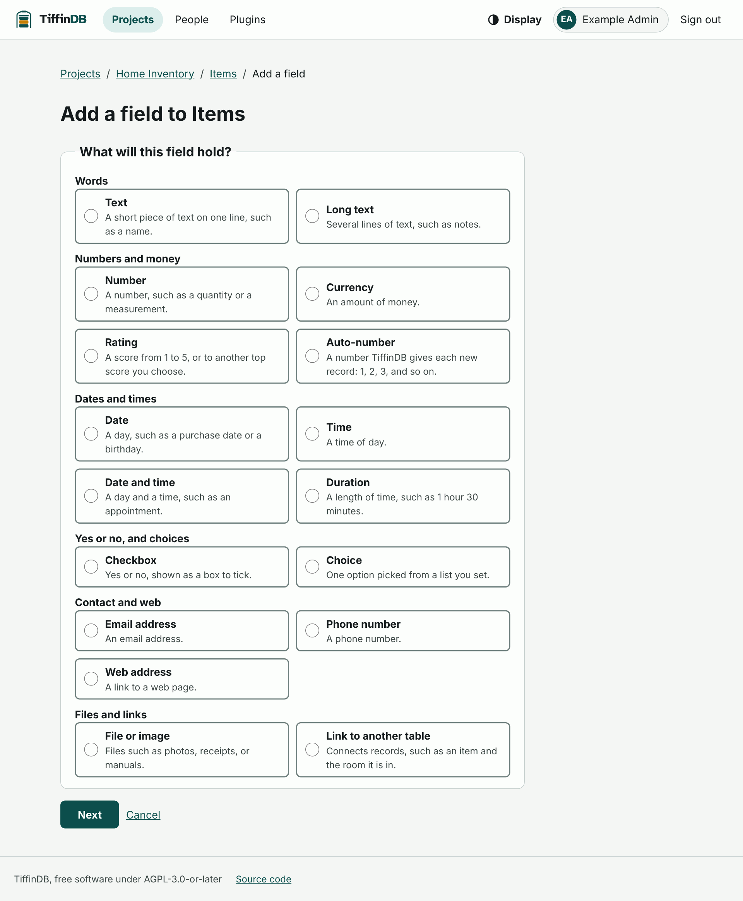
Some settings cannot change after you make the field. These are the digits after the point of a Currency field, the start number of an Auto-number field, and the table of a link field.
A link field has these settings:
- Link to records in: the table to link to.
- Each item can link to: One record or Several records. The word "item" changes with the table.
- Each record in the linked table can link to: One item or Several of these.
- Name of the matching field in the linked table: TiffinDB adds this field to the other table, so the link shows there too.
Change, rename, or change the type of a field
On the fields page, select the name of the field.
The page Change the field Value opens. It tells you how many records have a value in the field.
Make the changes.
To rename the field, change Field name.
Select Save field.
For a Checkbox field, the page counts only the records with a ticked box.
Change the type of a field
On the fields page, select the name of the field.
Select Change the type.
Select the new type below Change it to.
Select Change type.
If TiffinDB can convert all values, it changes the type. If it cannot convert some values, the page Clear 3 values? opens.
If that page opens, select Clear 3 values and save.
To stop, select Go back without saving.
Before it changes the type, TiffinDB saves a snapshot of the project. You cannot change the type of a File or image field or a link field.
Delete a field
On the fields page, select the name of the field.
Select Delete field.
The page Delete the field Value? opens.
Select Delete field.
TiffinDB deletes the field and its values. For a link field, TiffinDB also deletes the matching field in the other table.
Delete a table
Open the fields page of the table.
Select Delete table.
The page Delete the table Items? opens.
Tick the box that starts with I understand that.
Select Delete table.
The number of records on the delete page also counts the records in the trash. Thus it can be larger than the number in the list.
Caution
TiffinDB saves a snapshot of the project before it deletes a field or a table. You cannot restore the snapshot on the screen. Only the Admin who manages TiffinDB can restore it.
To change the table name, the word for one record, or the title field, use the box Table settings on the fields page. Then select Save table settings.
People
Select People in the top bar. The page shows each person, their username, their role, their projects, and whether they can sign in.
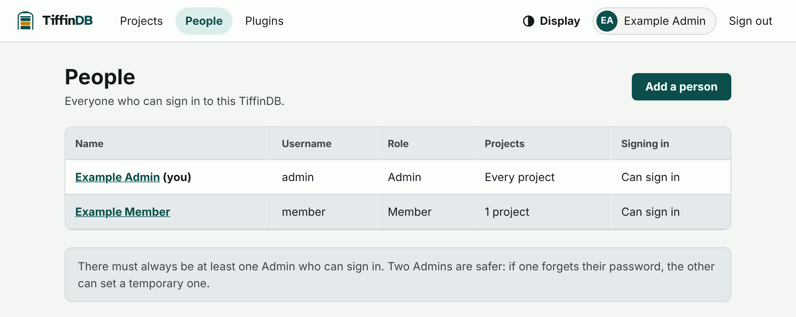
Add a person
On the page People, select Add a person.
Type the name in Name.
Type a username in Username.
Select Member or Admin below Role.
Keep the password that TiffinDB suggests in Temporary password. As an alternative, type a different password.
Record the temporary password.
For a Member, tick the projects below Projects they can use.
Select Add person.
The page of the person opens. The message ends with Give them their username and temporary password.
Give the username and the temporary password to the person yourself.
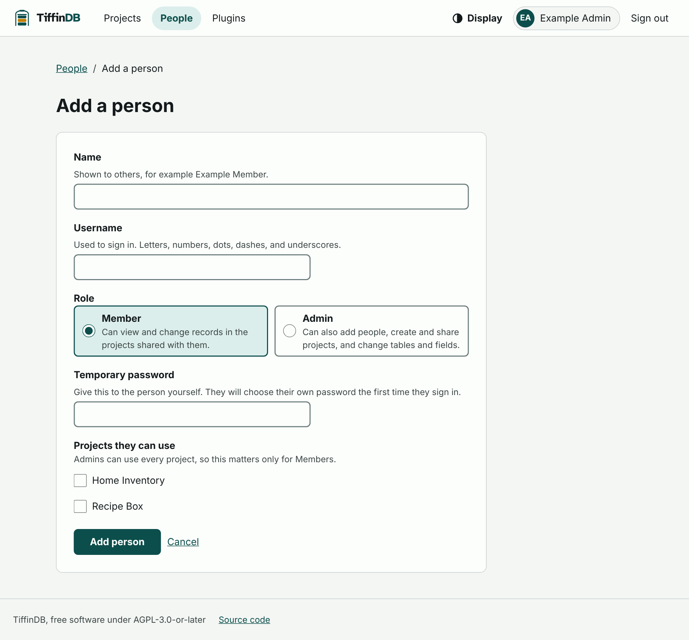
Warning
Give the temporary password to the person yourself, in a safe way. Do not send it in the same message as the username. The person must change it at the first sign-in.
Help a person who forgot their password
On the page People, select the name of the person.
Below Password, keep the suggested password in Temporary password. As an alternative, type a different password.
Select Set temporary password.
TiffinDB signs the person out on all devices. At the next sign-in, the person must choose a new password.
Give the temporary password to the person yourself.
On the same page, you can change the name, the username, and the role. Then select Save details. For a Member, you can also change the projects. Then select Save projects.
Stop a person from signing in
TiffinDB has no action to delete a person. Stop the person from signing in.
On the page People, select the name of the person.
Select Stop Example Member from signing in. The button shows the name of the person.
A page asks you to confirm.
Select Stop Example Member from signing in again.
TiffinDB signs the person out immediately. Their name stays on the changes that they made.
To let the person sign in again, open their page. Then select Let Example Member sign in again. You cannot stop yourself. You cannot stop the only Admin who can sign in.
Sharing
Admins can always use every project. A Member can use only the projects that you share with them.
On the page Your projects, select Sharing on the card of the project.
The page Share Home Inventory opens.
Tick each Member who can use the project.
Clear the box of each Member who cannot use the project.
Select Save sharing.
The page Your projects opens with the message Sharing for Home Inventory has been saved.
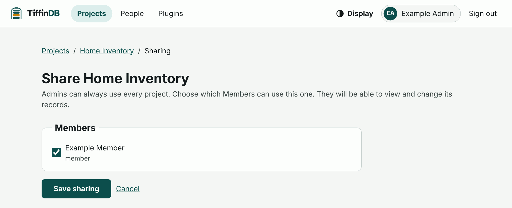
You can also share projects from the page of a person, below Projects they can use.
Plugins
Plugins read and write the file formats for import and export. Select Plugins in the top bar to see them. TiffinDB comes with plugins for CSV and Excel workbook import, and for CSV, JSON, and Excel workbook export.
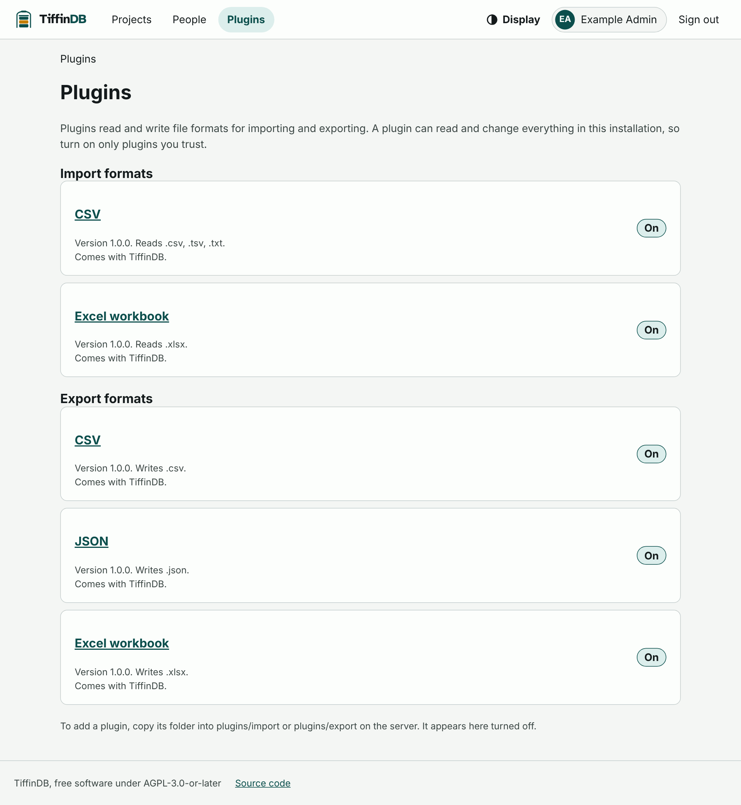
Select the name of the plugin.
Select Turn off or Turn on.
The message, for example JSON is turned off., shows. A format that is off does not show on the Import and Export pages.
Warning
A plugin can read and change everything in the installation: all projects, all accounts, and all files. Turn on a plugin that did not come with TiffinDB only if you trust its source. TiffinDB asks you to confirm before it turns on such a plugin.
Part 15Keyboard use, problems, and answers
Use TiffinDB with a keyboard
TiffinDB has no special shortcut keys. All controls are usual links, buttons, boxes, and lists. Thus the usual keys work:
- Tab goes to the next control. Shift + Tab goes to the control before.
- Enter opens a link or uses a button. Space ticks a box or uses a button.
- The arrow keys move the selection in a group of options, for example a rating, and in a list.
- The first Tab on each page goes to the link Skip to main content. Push Enter to skip the top bar and the sidebar.
- In a box with problems, each problem is a link that goes to its field.
- Enter in a search box starts the search. On the collection page, Enter does Preview.
TiffinDB also works without JavaScript. Without it, there are three differences. Show password does not show. The preview of the display settings does not change before you save. A long import needs Continue after each part.
Problems and answers
| Problem | Answer |
|---|---|
| I forgot my password. | Ask an Admin to set a temporary password for you. Refer to People. |
| The sign-in page says Too many tries. | Wait for the time in the message. Then type the username and password carefully. |
| I cannot see a project. | Ask an Admin to share the project with you. |
| I see Page not found. | The page does not exist, an Admin deleted the record permanently, or the project is not shared with you. |
| I see You cannot do that here. | Only an Admin can do this task. Ask an Admin. |
| I see This form has expired. | Go back to the page. Reload the page. Then do the task again. TiffinDB did not save anything. |
| I see Please try again in a moment. | A different person saves a change to the project at the same time. Wait a moment. Then try again. You did not lose anything. |
| I see Something went wrong. | TiffinDB did not change anything. Try again. If the problem continues, tell the Admin who manages TiffinDB. |
| I cannot find a record. | Look in the trash. Clear the search text. Remove the filter. Make sure that you look in the correct table. |
| I cannot add a link or a file on a new record. | Save the record first. |
| My changes went away when I added a file or a link. | The buttons for files and links leave the page. Select Save before you use them. |
| The file is too large. | The upload limit depends on the server settings. Make the file smaller. Or ask the Admin who manages TiffinDB. |
| A collection says that a rule no longer works. | Open Edit collection. Correct or remove the rule. Refer to Part 9. |
| My collection does not save, with Choose a field for this rule. | Select Remove next to the empty rule. |
| The JSON export holds all tables, not one. | This is correct. JSON always holds the whole project. Use CSV or Excel workbook for one table. |
| The list starts far down the page on my phone. | The project sidebar is above the list on a narrow screen. Scroll down. |
| The text is too small or hard to read. | Select Display. Change the text size, the colours, or the typeface. Refer to Part 13. |
TiffinDB is free software under the GNU Affero General Public License, version 3 or later. Source code: github.com/osh-labs/tiffindb.